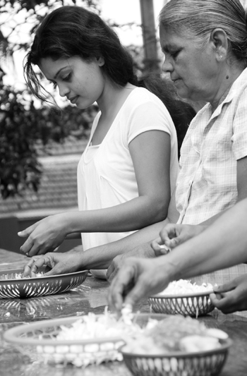

‘බුද්ධං සරණං ගච්ඡාමි’ යනාදි පාඨවල නියම තේරුම කවරේ ද?
‘බුද්ධං සරණං ගච්ඡාමි’ යනාදි පාඨවල නියම තේරුම කවරේ ද?
එක් එක් වචනයකින් කියැවෙන්නේ එක් අර්ථයක් ම නො වේ. සමහර වචනවලින් අර්ථ දෙක තුන
කියැවේ. සමහර වචනවලින් හත අට දහය දොළහ කියැවේ. වචනයකින් කියැවෙන අර්ථය සලකා ගත
යුත්තේ ඒ වචනය යෙදී ඇති තැනේ සැටියට තැනට ගැලපෙන පරිද්දෙනි. ගච්ඡාමි යන වචනය
බෙහෙවින් යෙදෙන්නේ තැනකින් තැනකට යාම නමැති අර්ථය දැක්වීමට ය. සරණසමාදානය එබඳු
යාමක් නොවන බැවින් තැනකින් තැනකට යාම නමැති අර්ථය බුද්ධං සරණං ගච්ඡාමි යන්නෙන් නො
ලැබේ. බුද්ධං සරණං ගච්ඡාමි යන පාඨයෙහි ‘ගච්ඡාමි’ යන වචනයෙන් කියැවෙන්නේ දැනගැනීමය,
පිළිගැනීමය, සේවනය කිරීමය, භජනය කිරීමය යන අර්ථයෝ ය. බුද්ධං සරණං ගච්ඡාමි යන පාඨයේ
තේරුම බුදුන් වහන්සේ පිළිසරණක්ය කියා දැන ගනිමිය, සලකා ගනිමිය, සේවනය කරමිය යනුයි.
ධම්මං සරණං ගච්ඡාමි, සංඝං සරණං ගච්ඡාමි දෙකෙහි තේරුමත් එසේ ම සලකා ගත යුතු ය.
බුදුන් සරණ යෙමිය කියන කල්හිද අර්ථය එසේම සලකා ගත යුතු ය. සරණ යාමය කියන්නේ
කොහාටවත් යාමක් නොව පිහිටක්ය කියා දැන ගැනීම ය. පිහිටක්ය කියා සලකා ගැනීම ය.
පිළිගැනීම ය .
විෂ්ණු කතරගම ආදී දෙවිවරුන්ට පුදපූජා පැවැත්වීමෙන් ඔවුන්ගේ පිහිට සෙවීමෙන් සරණ ශීලය
බිඳී බෞද්ධත්වය නැති වේ ද?
ලෝකෝත්තර සරණ ගමනය ලෞකික සරණ ගමනය යි. සරණගමන දෙකක් ඇත්තේ ය. ලෝකෝත්තර සරණගමනය
ඇත්තේ චතුරාර්ය සත්යය ප්රත්යක්ෂ කළ සෝවාන් සකෘදාගාමී අනාගාමි අර්හත් යන ආර්ය
පුද්ගලයන්ට ය. එය කවදාවත් කිළිටි වන්නේත් නැත. බිඳෙන්නේත් නැත. එය මරණින් ඔබ්බෙහි ද
නො වෙනස්ව පවතින්නේ ය. ආර්ය පුද්ගලයකු කාලක්රියා කොට අන් භවයක උපන් කල්හි ද ඔහු ගේ
සරණ ගමනය එසේම ඇත්තේ ය. පෘථග්ජන පුද්ගලයන් ගේ සරණ ගමනය ලෞකික ය. එහි කිලිටිවීමත්
බිඳීමත් ඇත්තේ ය.
“ලොකිය සරණ ගමනං තිසු වත්ථුසු අඤ්ඤණ සංසය මිච්ඡාඤාණාදීහි සංකිලිස්සති” යි ලෞකික
සරණාගමනය බුද්ධාදි රත්නත්රය කෙරෙහි නො දැනීම ය. සැකය, වැරදි දැනුමය යනාදි
කරුණුවලින් කිලිටි වන බව භයභේරව සූත්ර අටුවාවෙහි දක්වා තිබේ. බුදුන් සරණ යෙමි
යනාදීන් කීවත් බොහෝ දෙනා ගේ සරණ ගමනය කිලිටි වන්නේ බුදුන් වහන්සේ සර්වඥ ද? නැත ද?
අසවල් කරුණ බුදුනට නො පෙනුනේ මන් ද? රත්නත්රයෙන් පිහිටක් ඇත ද? නැත ද? යනාදීන් පහළ
වන සැකවලිනි.
ආගම් ඇදහීමෙන් වැඩක් නැත කියා රත්නත්රය අතහැර දැමීමෙන් ද දේව බ්රහ්මාදි අනිකකු
තමා ගේ ගැලවුම්කාරයා ලෙස පිළිගැනීමෙන් ද මරණයෙන් ද ලෞකික සරණගමනය බිඳේ. එය
ලෝකෝත්තර සරණ ගමනය සේ භවාන්තරයට නො යන්නේ ය. රත්නත්රය සරණ ගිය තැනැත්තා විසින්
එයින් බලාපොරොත්තු විය යුත්තේ බුදුරජාණන් වහන්සේ ගේ ධර්මය අනුව පිළිපැද අපායෙන්
මිදීමත් සඟමොක් සැප ලැබීමත් ය. තවත් ක්රමයකින් කියතහොත් ජාති ජරා මරණාදි දුක්
කෙළවර කිරීම ය. ආහාර පාන සපයා ගැනීම, ඇඳුම් – පැළඳුම් සපයා ගැනීම, ගෙවල් - දොරවල්
යාන වාහන සපයා ගැනීම, පුරුෂයන්ට භාර්යාවන් සොයා ගැනීම,
මල් පුදන්නේ කුමට ද? එයින් ඇති ප්රයෝජනය කුමක් ද?
මල් පූජාව බුදුන් වහන්සේට හෝ චෛත්යයට බෝධියට විහාරයට හෝ මල්වලින් ඇති වුවමනාවක්
නිසා කරන්නක් නොවේ. මනා වර්ණයෙන් හා සුවඳින් යුක්ත වන මල පි්රය වස්තුවකි. ශුද්ධ
වස්තුවකි. එබැවින් එය ලෝකයා විසින් උසස් දෙයක් කොට සලකනු ලැබේ. එබැවින් උසස් කොට
සලකන මිණි මුතු ආදිය මෙන් මල් හිසෙහි ද පළඳිති. ගරු කළ යුත්තකුට ගරු කිරීමක් වශයෙන්
පිරිනැමිය යුත්තේ තමා විසින් උසස් කොට සලකන පිළිගන්නා තැනැත්තා විසින් ද පිළිකුල්
නො කරන දෙයකි. මල එබඳු දෙයක් බැවින් දෙවියන්ට ගරු කරන මනුෂ්යයෝ මලින් දෙවියන්
පුදති. රාජාදි උසස් අය දක්නට යන කල්හි ද බොහේ දෙනා මල් ගෙන යති. උතුමන් පිළිගැනීමේ
දී මල්මාලා පළඳවති. බුදුන් වහන්සේ ලෝකයේ අන් සැමට ම වඩා උත්තම බව දත් නුවණැත්තෝ උන්
වහන්සේට ද මල් පුදන්නට වූහ.
උන් වහන්සේ ගේ පිරිනිවීමෙන් පසු උන් වහන්සේ වෙනුවට ශරීරික පාරිභෝගික උද්දේශික
චෛත්යයන්හි මල් පුදන්නට වූහ. එසේ පූජා කරන්නේ අනුවණකම හෝ උමතුකම නිසා නොව,
බුද්ධාදී උත්තමයන්ට වැඳුම් පිදුම් කිරීමෙන් බොහෝ අනුසස් ලැබිය හැකි නිසා ය. ගරු කළ
යුත්තන්ට ගරු කිරීමත්, පිදිය යුත්තන් පිදීමත් උතුම් පින්කම් දෙකකි. වැඳුම් පිදුම්
මෝඩ වැඩ සැටියට පෙනෙන්නේ ආගම නො දත්, පරලොවක් ඇති බව නො දත් පින් පව් නො හඳුනන අයට
ය. මල් පිදීමෙන් බොහෝ කල් දෙව් මිනිස් සැප ලබා අන්තිමට නිවන් දැක දුක් කෙළවර කර ගත්
අය ගේ තොරතුරු දැක්වෙන කථා බොහෝ ගණනක් බෞද්ධ පොත්වල එන්නේ ය. රජගහ නුවර එක්
උපාසිකාවක් චෛත්යයට පුදන්නට මල් සතරක් ගෙන යද්දී පැටවකු ඇති දෙනක විසින් ඇන මරා
දමනු ලැබ, මල් ගෙනයාමේ පිනෙන් ම තව්තිසා දෙව්ලොව උපන් බව විමානවත්ථු පාලියෙහි ඇත්තේ
ය. බුදුනට මල් පිදීමේ අනුසස කොතරම් මහත් ද යන බව එයින් සලකා ගත හැකි ය.
රේරුකානේ චන්දවිමල හිමි
|